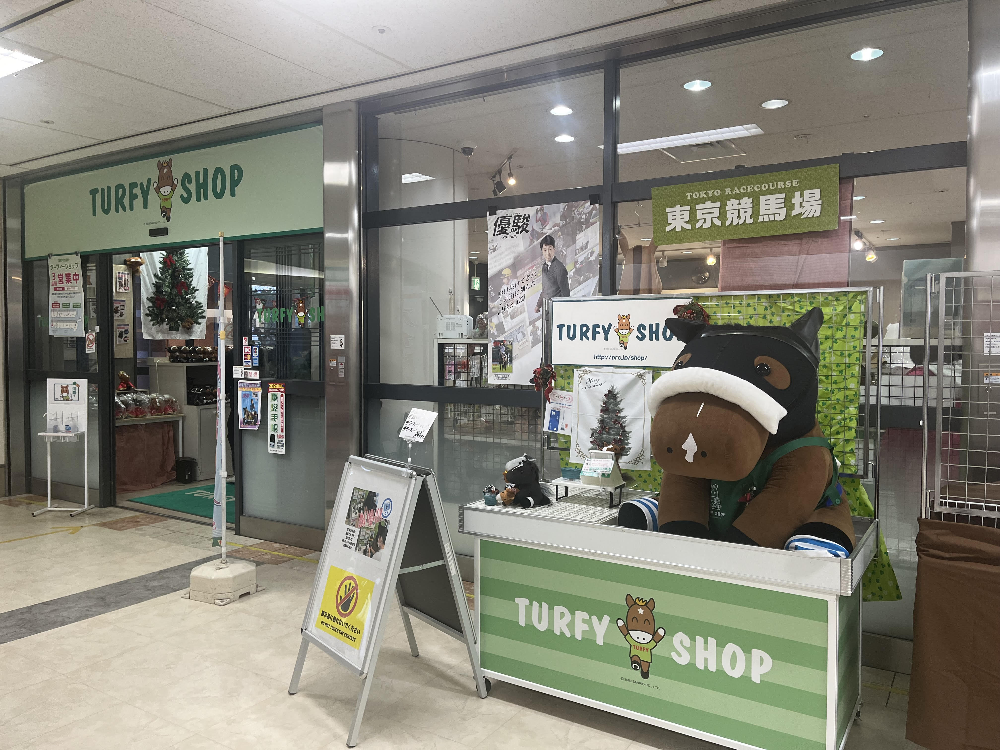
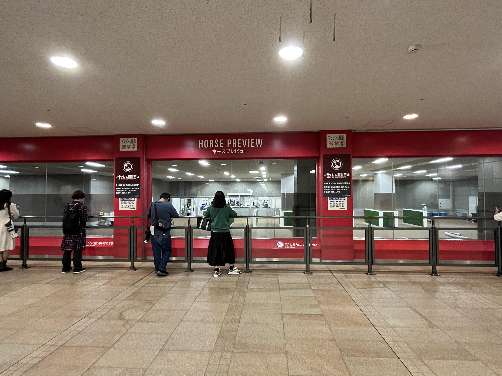
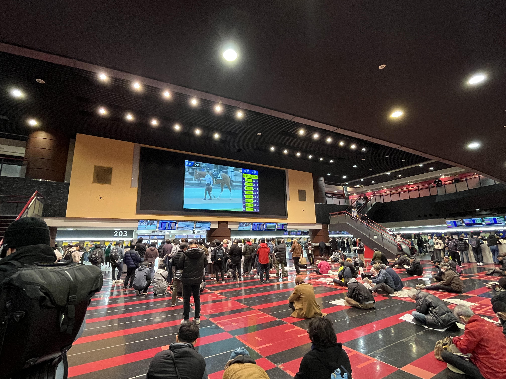
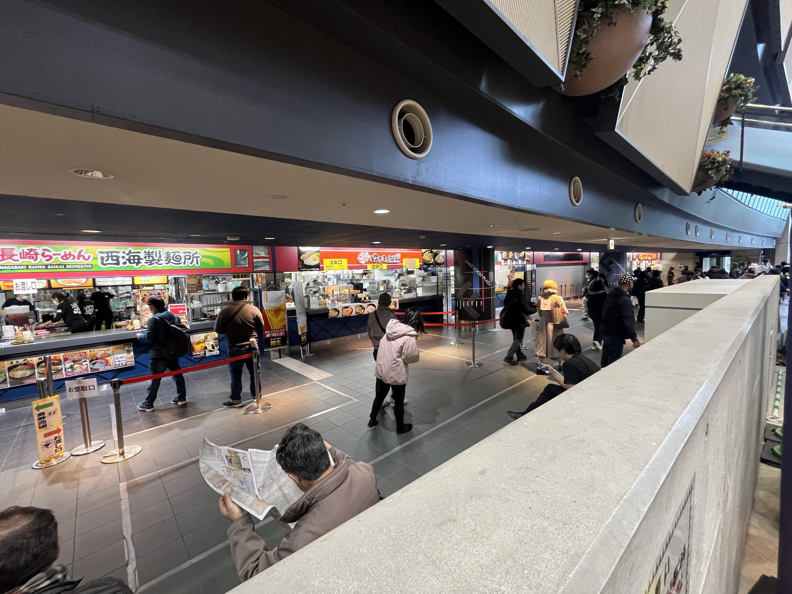
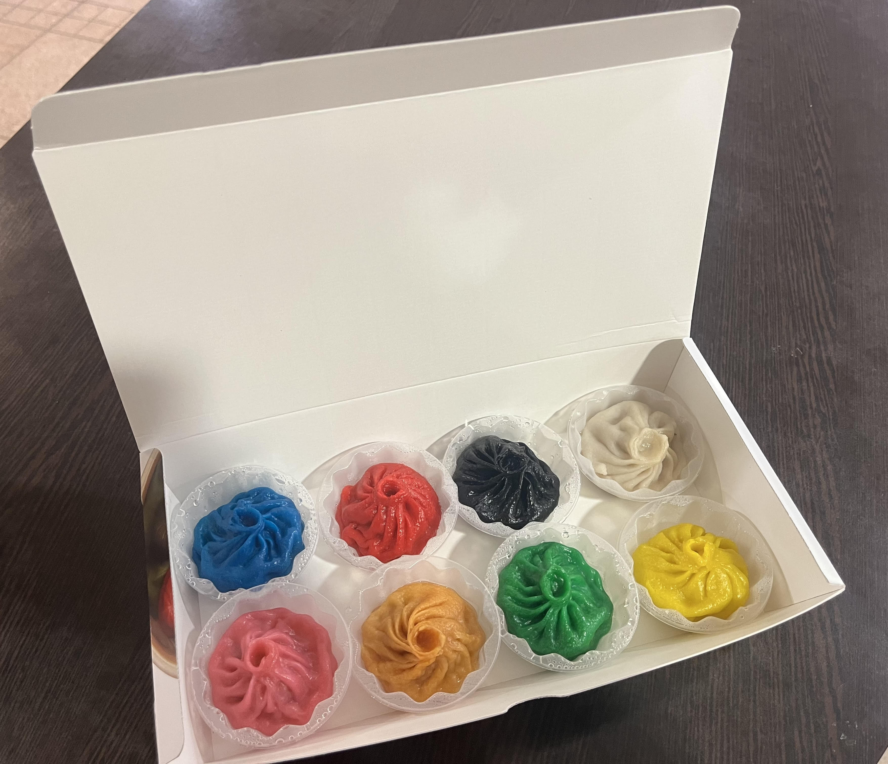
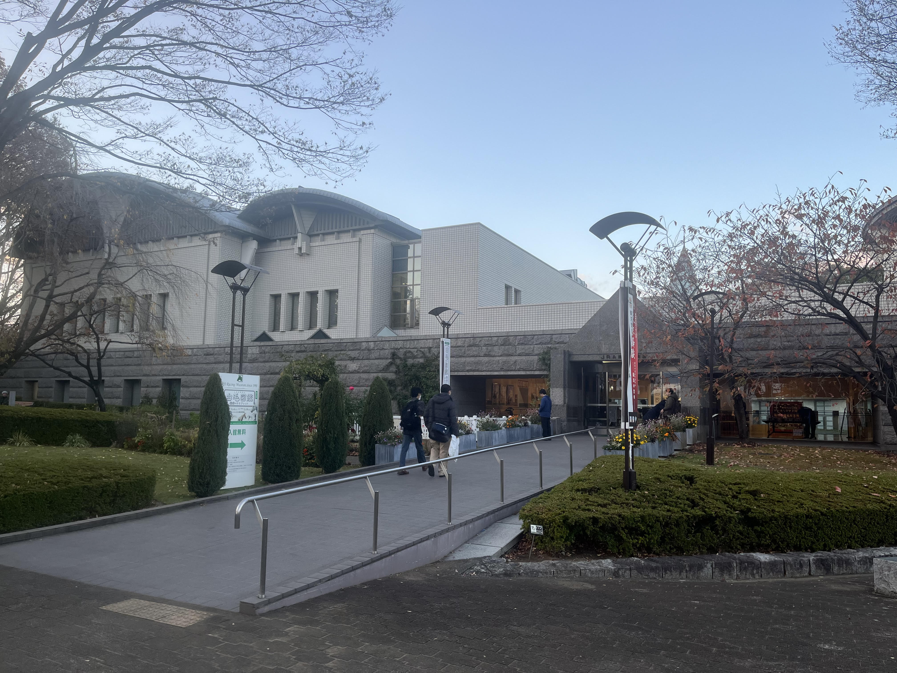

主な施設（東京競馬場）
スタンド内の施設
| ターフィーショップ |
| 
競走馬のぬいぐるみやキーホルダー、Tシャツなどの様々な競馬グッズが販売されているコーナーです。 営業時間：開門～17時00分まで 場所：フジビュースタンド2階・3階、 メモリアル60スタンド2階 ※フジビュースタンド3階の店舗は東京競馬開催時 |
| ホースプレビュー |
| 
レースを終えて引き上げてきた騎手や馬を間近で見ることができるファンに大人気の施設。 レース終了後、騎手の方々が検量室に引き上げる姿や関係者と話している場面などレースの裏側を見ることができます。 場所：フジビュースタンド1階 |
| ウエストホール |
| 
コンサートホールのような大スクリーンを完備した 屋内のスタンドです。吹き抜けになった広い空間に 巨大なスクリーンがあり、迫力のあるレースシーン を観戦することができます。 場所：フジビュースタンド2階 |
| セブンイレブン |
 東京競馬場で唯一のコンビニです。町中にあるコンビニと変わらず、食品や飲料だけでなく、便利な日用品なども売っています。
東京競馬場で唯一のコンビニです。町中にあるコンビニと変わらず、食品や飲料だけでなく、便利な日用品なども売っています。場所：フジビュースタンド3階 |
| ファストフードコート |
| 
フジビュースタンド1階の東側・2階の西側、メモリアル60スタンド地下1階には、人気ファストフード店が立ち並ぶファストフードコートがあります。 場所：フジビュースタンド1階の東側・2階の西側、 メモリアル60スタンド地下1階 |
| 
・枠色小籠包：Two daysで売っているゲートの枠色に着色された小籠包です。 それぞれ使っている出汁が違いいろんな味が楽しめます、競馬場限定商品となっています。 |
スタンド周辺の施設
| パドック |
 パドックではレース前の競走馬を間近で見ることができます。
競走馬の気配や発汗などをしっかり確認して馬券の予想に役立てましょう。
パドックではレース前の競走馬を間近で見ることができます。
競走馬の気配や発汗などをしっかり確認して馬券の予想に役立てましょう。
|
| JRA競馬博物館 |
|  JRA競馬博物館は、東京競馬場の敷地内にて、競馬の誕生から 日本競馬の普及、発展、歴史など、競馬に関わる情報が展示してある施設です。競馬の魅力をつめこんだ館内では、さまざまな角度からわかりやすく紹介されています。 |
| ローズガーデン |
 日本ダービーが「バラの祭典」と呼ばれることから、「ローズガーデン」と命名されたそうです。
ローズガーデンには、ダービーのイメージカラーである赤を基調とした200種を超えるバラが植えられています。
日本ダービーが「バラの祭典」と呼ばれることから、「ローズガーデン」と命名されたそうです。
ローズガーデンには、ダービーのイメージカラーである赤を基調とした200種を超えるバラが植えられています。
|